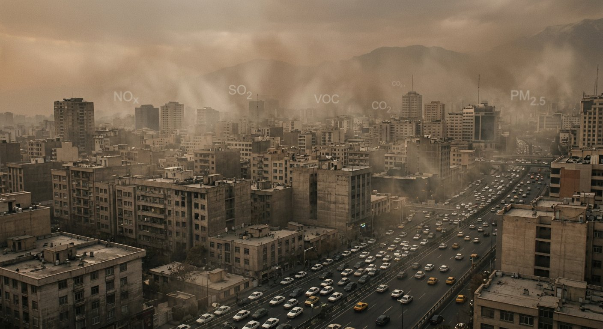
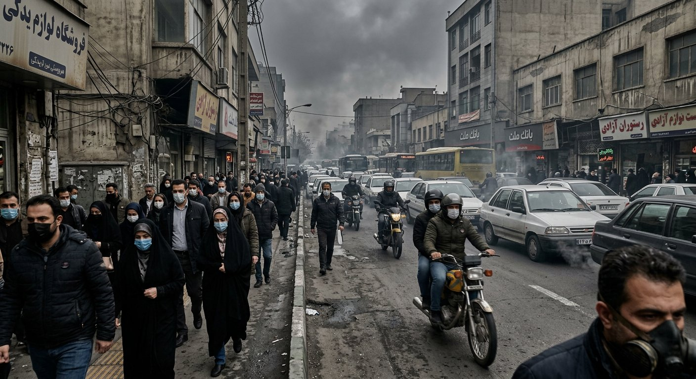
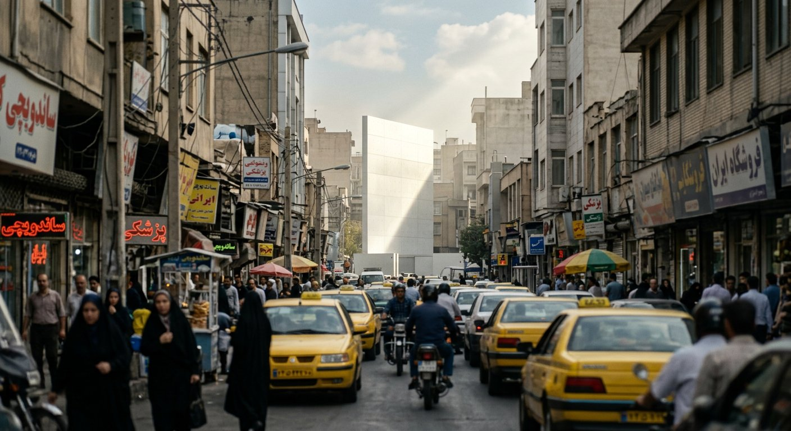
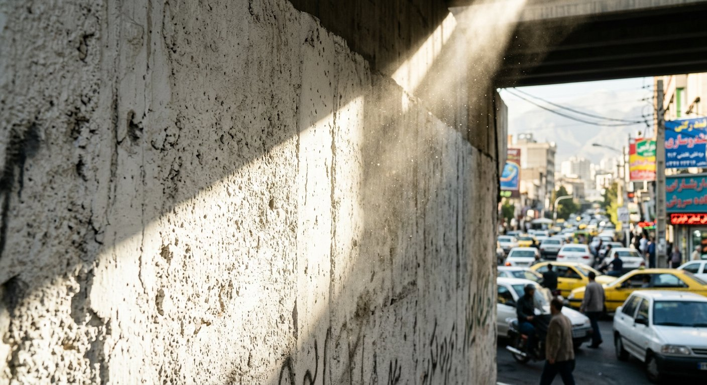
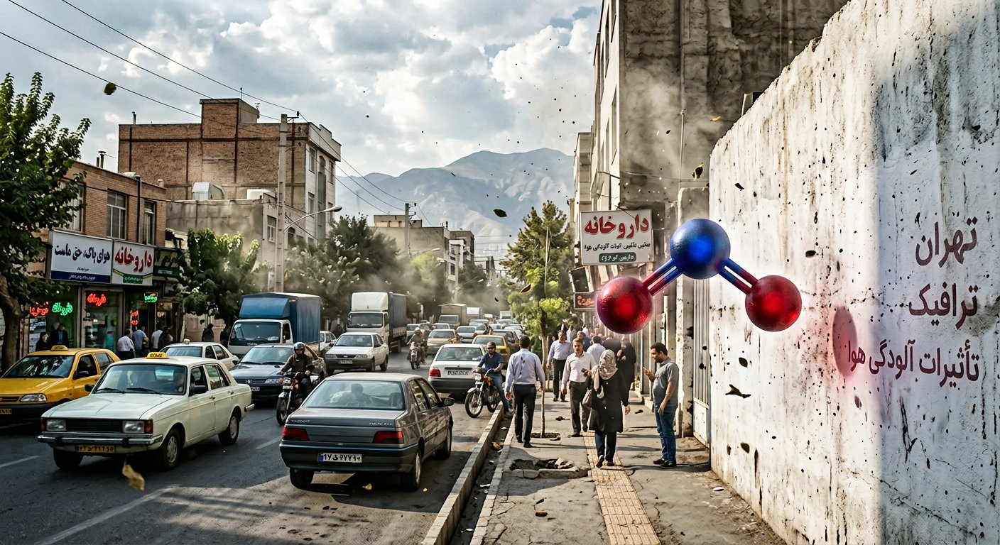
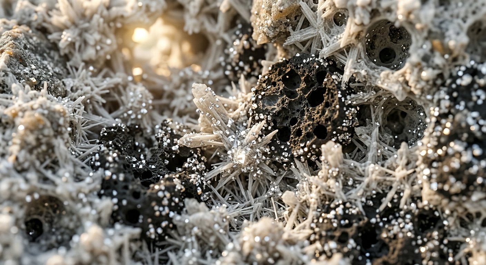
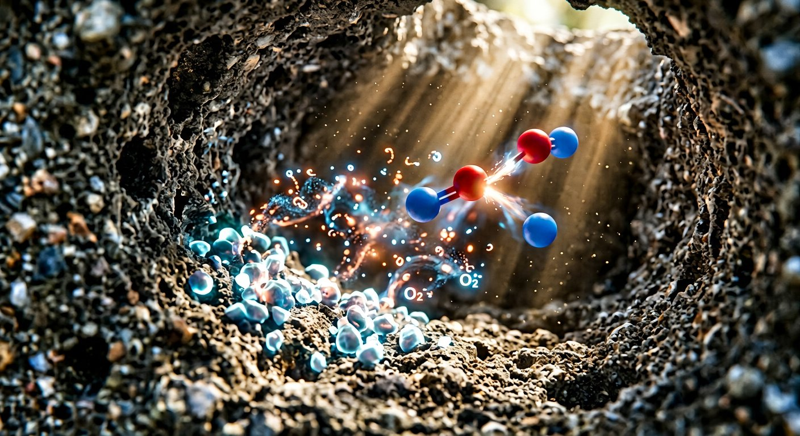
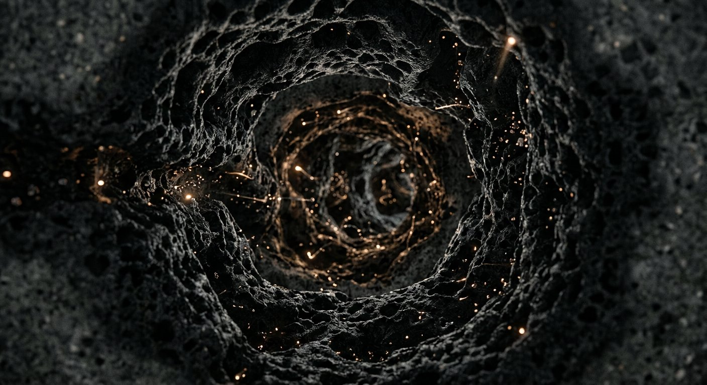
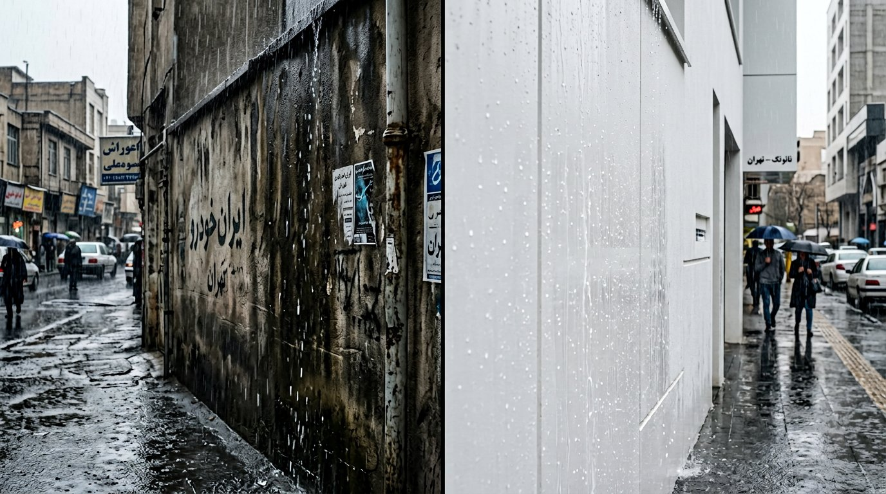
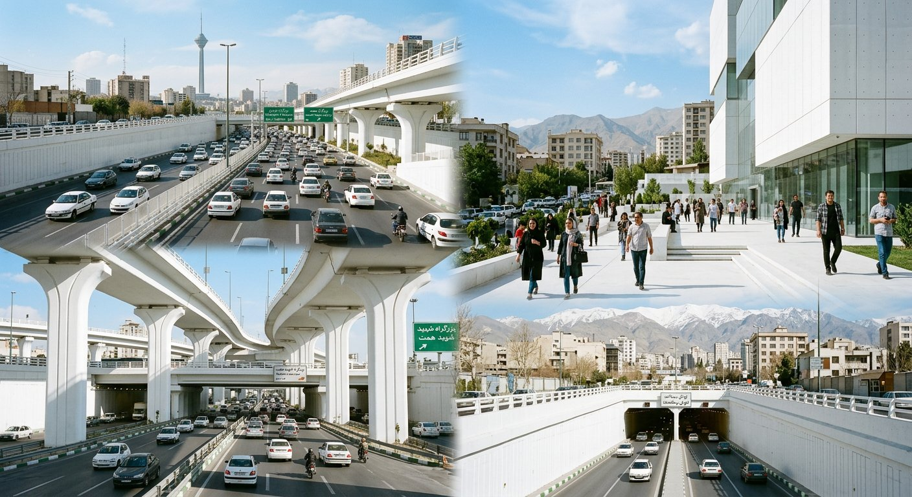
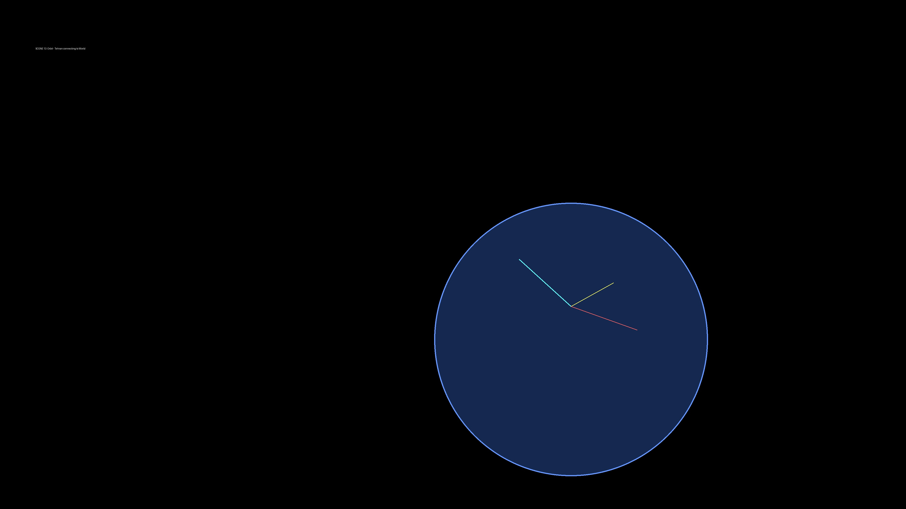
Registered Patent · Photocatalytic Activated Carbon Concrete
Film package: 10 AI pre-viz photoreal plates + animatic + full script + tech specs · /film/
Apple Keynote Polish · Tesla Launch Energy · National Geographic Realism · 8K HDR